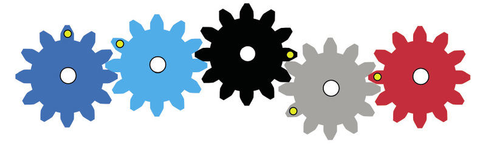
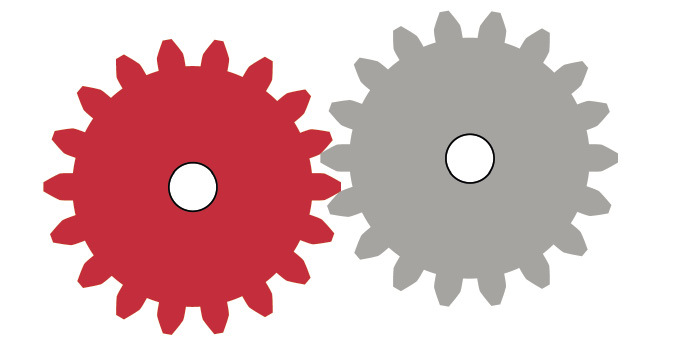
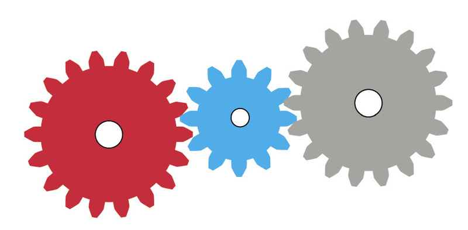

Gears
In this chapter, you will revise spur gear systems and how they can be used to change the direction, speed and turning force of rotation. You will calculate number of revolutions, rotation speeds and turning forces.
You will also look at other types of gears, namely bevel gears, rack-and-pinion gear systems, and worm-gear systems. These other types of gear systems make it possible to change the direction of rotation in ways that spur gears cannot do.
_opt.jpeg)
Direction of rotation of spur gears
Counter rotation and idler gears
-
How many teeth do each of these gears have?
-
The black gear is turned clockwise until the yellow dot reaches the position shown in Figure 4. Draw arrows next to Figure 4 to show where the blue and red dots will be.

Figure 3 -
In what direction did the blue gear turn?

Figure 4 -
Through which part of a full revolutiondid each gear turn?
-
The two blue and black gears in the above situation turn in opposite directions. This can also be described by saying that the two gears counter-rotate.
-
The dark blue gear on the left below is turned anti-clockwise through two thirds of a full turn. Indicate with arrows where each of the yellow dots will be afterwards.

Figure 5 -
If the red gear below is turned anti-clockwise, in what direction will the grey gear turn?

Figure 6: Counter-rotation -
In the situation below, the red gear drives the blue gear and the blue gear then drives the grey gear. If the red gear is turned clockwise, in which direction will the grey gear turn?

Figure 7: A blue idler gear -
If the red gear in the above system makes one full turn, how many turns will the blue gear make, and how many turns will the grey gear make?
Number or rotations of driver and driven gears
Suppose the red gear in Figure 8 drives the small grey gear. The red gear has 18 teeth and the grey gear has 6 teeth. For every 1 tooth in the grey gear, there are 3 teeth in the red gear.
When a gear has made a full turn, you can say it has made one full revolution.
-
If the red driver gear makes one full revolution anti-clockwise, how many revolutions will the grey driven gear make, and in which direction?
-
If the red driver gear makes 8 full revolutions, how many revolutions will the grey driven gear make?
-
How many revolutions should the red gear make for the grey gear to make 12 revolutions?
-
In a different set of gears, the driver gear has 20 teeth and the driven gear has 80 teeth. How many full revolutions will the driven gear make if the driver gear makes 20 full revolutions?
Speed of rotation of driver and driven gears
Suppose the small gear in Figure 9 drives the big gear. The small gear has 20 teeth and the big gear has 40 teeth.
-
If the small driver gear makes 12 revolutions in one minute, how many revolutions will the driven gear make in the same time?

Figure 9 -
If the small driver gear in Figure 9 makes 40 revolutions in one minute, how many revolutions will the driven gear make in the same time?
If a gear makes 40 revolutions in one minute, we say the gear turns at a speed of 40 revolutions per minute. The abbreviation rpm is often used for ”revolutions per minute“.
-
Look at the situation in Figure 9 again. If the driver gear with 20 teeth turns at 80 rpm, at what speed will the driven gear with 40 teeth turn?
-
If you want the driven gear in Figure 9 to turn at a speed of 120 rpm, how fast should the driver gear be turned?
Gear ratio, rotational speed and rotational force
A road roller has a bigger engine than a sports car, but moves much slower.
To make a heavy road roller move, a large turning force needs to be applied to the wheels. If the output rotational speed of the wheels is much slower than the input rotational speed of the engine, then the output rotational force will be much bigger than the input rotational force. A road roller uses a set of gears that changes the fast rotational speed of the engine into a very slow rotational speed of the wheels, so that the rotational force at the wheels is strong enough to move the heavy road roller.
With a sports car, a much smaller rotational force is needed at the wheels, because the car is light. The set of gears used to start moving a sports car also changes the fast rotational speed of the engine into a slower rotational speed of the wheels, but not as slow as with the road roller. So with a sports car, the wheels turn faster but with a smaller turning force than the road roller.
-
Look at the set of gears in Figure 12. The driver gear has 20 teeth and the driven gear has 80 teeth?
Is this gear system increasing the rotational force or decreasing it? Explain your answer.
Figure 12
Revision of what you learnt about gears in grade 8
Look at the set of gears on the right. The big gear is the input gear, and the small gear is the output gear.
Each gear is fixed to an axle, and the axle drives a fan. The speed with which the fan turns is called the rotational speed of the axle.
When a gear with many teeth drives a gear with fewer teeth, the driven gear turns faster, but with a smaller turning force than the driver gear.
When a gear with few teeth drives a gear with many teeth, the driven gear turns slower, but with a bigger turning force than the driver gear.
Gear ratio is defined as follows:

-
Calculate the gear ratio of the set of gears inFigure 12.
Gear ratio and speed ratio is the same thing. It can also be called "velocity ratio".
You can write a gear ratio in different ways, for example "2 to 1", "2:1" or simply "2",
Turning force is also called torque.
-
In Figure 12, if the input axle is rotating at 120 rpm, at what speed is the output axle rotating?
-
In Figure 12, which axle will turn with the greatest force, the driver or the driven axle?
Comparing turning forces on the input and output axles
In Chapter 7 you learnt how a system of pulleys can give you a mechanical advantage to make it easier to hoist up heavy objects. You will now investigate how a gear system can do the same, by changing a small turning force on the input axle into a big turning force on the output axle.
Look at Figure 14 below. The input (driver) gear has 9 teeth and the output (driven) gear has 18 teeth. A rope is wound around each axle.
Note: You will only consider axles with the same diameter in this chapter. When the diameters of the axles around which the ropes are wound are different, you also need to think about that to compare turning forces.
-
What is the gear ratio?
-
For one full revolution of the input gear, how many revolutions will the output gear make?
-
If you pull the input rope down by 2 cm, how far will the output rope be pulled up? Draw the vertical part of the output rope in the "position at the end" part of Figure 14 to show where the output rope will be after you pulled the input rope down by 2 cm.
-
Will the force exerted by the output rope be bigger or smaller than the force applied to the input rope? How much bigger or smaller?
Hint: Think of the situation as if it was a pulley system. You already know the relationship between the input distance and the output distance.
-
If you pull down with a force equal to3 kg on the input side, how heavy a load can be lifted on the output side? Write this below and also on Figure 15.

Figure 15
Use the formula above to check your answer to question 5.
Consider other sets of gears with ropes around the axles, as you did on the previous page:
-
In a certain system, the input gear has 6 teeth and the output gear has 18 teeth. If you apply 4 kg of force on the input rope, what is the heaviest load that can be lifted by the output rope?
-
In a certain system, the input gear has 12 teeth and the output gear has 30 teeth. If you want to lift a load of 75 kg on the output rope, with what force in kilograms must you pull the input rope?
-
A certain person can only pull with a maximum force of 25 kg. That person needs to hoist loads of up to 150 kg. Design a gear system that will allow that person to hoist the heavy loads. In others words, how many teeth should the input and the output gears have?


Do you think bevel gears can also be used to change the speed of rotation? Explain your answer and give examples.
Why is fast rotation needed to beat eggs properly?
In a particular bevel gear set, the gear ratio is 1 to 12.
-
The driven gear in this gear set has eight teeth. How many teeth does the driver gear have?
-
How many revolutions will the driver gear make if the driven gear makes 60 revolutions?
-
How fast should the driver gear turn to make the driven gear turn at 36 rpm?
Suppose you want to buy a food mixer to help you mix ingredients when you bake a cake. Which food mixer would require the biggest force to turn when you mix: the mixer with a ratio of 1:3 or a mixer with a gear ratio of 1:30? Explain your answer.

What do you think is inside the shell structure in Figure 20, and why is it there?
In which direction will the gate move when the gear wheel is turned clockwise (as seen from inside the gate), in Figure 20?
The gear wheel is called the pinion gear.
The straight bar with teeth is called the rack gear.
When something moves round and round, like a wheel, the movement is called a circular motion or rotation.
When something moves in a straight line, like a stone falling, the movement is called a linear motion.

The gear wheel is called the pinion gear.
The straight bar with teeth is called the rack gear.
Which part of a rack-and-pinion gear set rotates?
Which part of a rack-and-pinion gear set moves in a straight line?
If the distance between two teeth on the rack is 3 cm, and the pinion has 18 teeth, how far will the rack move if the pinion makes one full revolution?

-
How many teeth does the pinion gear of the steering system in Figure 24 have?
-
What difference will it make to the car driver if the pinion gear is replaced with a bigger gear that has 27 teeth?

If the wheel in Figure 26 has 32 teeth, how many revolutions will the worm have to make for the wheel to make one full revolution?
Does the toothed wheel turn faster or slower than the worm?
If there are 18 teeth on the wheel, and the worm is turned at 6 rpm, how long will it take for the toothed wheel to make one full revolution?
If there are 18 teeth on the wheel, how fast should the worm be turned to make the wheel turn at 3 rpm?

There is another useful thing about worm gears: the worm can turn the worm wheel, but the wormwheel cannot turn the worm. That is why worm gears are used for elevators.
Imagine you are in an elevator that is lifted by an ordinary spur-gear set and the power goes off.
Explain what would happen and why.
You learnt about hydraulic car jacks in Chapter 6. There are also other kinds of car jacks. In the space below, make a rough sketch of how a rack-and-pinion system combined with a ratchet-and-pawl system can be used to make a car jack.